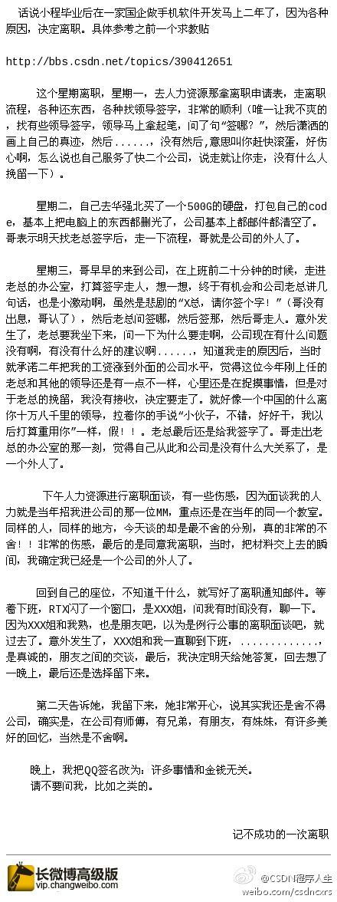

如果钱不能给到位，公司在友情方面还是可以努把力的。//@CSDN产品客服: #程序人生#这样的结果真的很让人意外，很多人不离职，都是因为公司里不能割舍的友情。@CSDN程序人生:【人生其实真的充满意外，讲一讲这星期离职不成功的故事】话说小程毕业后在一家国企做手机软件开发马上二年了，因为各种原因，决定离职。这个星期离职，去人力资源那拿离职申请表，走离职流程，各种还东西，各种找领导签字，非常的顺利，然后......网页链接 